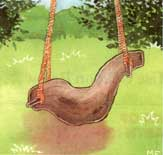
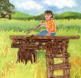
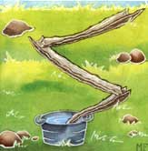
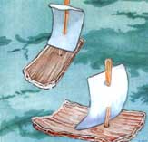

Sunday Afternoon
BY THE MIDDLE OF SUMMER, THE KIDS HAVE swung on the backyard tire enough times to qualify for frequent flier miles, and the wading pool toys you bought have mysteriously disappeared into the pool's own Bermuda Triangle. And somehow the treehouse you promised them last winter just seems a little daunting, not to mention stressful (12 feet is a long way down for a six-year-old; your nerves aren't that good). What to do? Toys these days are outrageously expensive, easily broken, and unnecessarily complicated. And with a month remaining until school starts, a Sunday afternoon's investment in time can yield one or more of these natural outdoor playthings, saving you lots of money-and lots of sanity.
A HORSE SWING: Check your wooded property for a young locust or some other tree with a beautiful curve at its base. The bottom of the trunk will make a sturdy and graceful swing.
To convert the trunk to a swing, first cut it and carry it to your shed. Strip off the bark-quite an easy task while the wood is green. Then, using a brace fitted with a one-inch bit, bore two parallel holes through the swing-to-be's side, one at each end of the trunk.
Next, saw a pair of one-inch diameter lengths, each about eight inches longer than the width of the log, from a straight hardwood branch. With the bark removed, blunt the ends. The stubs should fit snugly in the holes with an end protruding on either side of the log. Ropes are then attached to the ends of the crosspieces to suspend the swing.
The hanging horse can be safely used by any child old enough to hold himself or herself in place on it, and the height of the swing steed can be easily adjusted to suit the length of the young rider's legs by letting out or taking up the rope it hangs by.
A PLAYING PLATFORM: The next time you have to cut down trees near your house, you might leave a little more stump than you ordinarily would. These will make sturdy foundations on which you can build playing platforms.
To begin, set a post in the ground at a point about six feet from two serviceable stumps cut to the same level as the post. Then 2 X 4's are spiked in place running from each stump and the post to form a triangular base. Nail some old boards across these beams, and add a small ladder.
Because this "platform" is shaded by greenery, it has the feel of a tree house. It can be a pretend pirate ship, a goblin's cave, or a knight's castle.
BARK PIPELINES: The remainder of the tree used to make the horse swing can be stripped and cut into fenceposts, a process that will produce a pile of curled bark. A four-year-old can construct a water engineering project using these leftovers, and though such a homemade aqueduct might seem just a toy, bark-strip conduits have been used by pioneers and homesteaders for channeling water to a house.
BARK BOATS: Another project using bark will turn small scraps that are 2 to 2-1/2 inches wide and 3 to 4 inches long into little Viking ships.
First, use a nail to press holes into the bark at any points where you want to locate masts. The uprights are made from thin sticks whittled to a point on one end. Trapezoid-shaped pieces of paper or big leaves can serve as sails. Just slip them onto the sticks and mount the masts in the nail holes.
Add to any pond, pool, or lake and when you blow on the little sails, the small bark boats slip prettily across the water. Throw in a few acorns for buoys and you're off to the races! Don't be too surprised if there are a few exciting capsizings to watch.
|
 |
 |
 |
|
 |
|
|